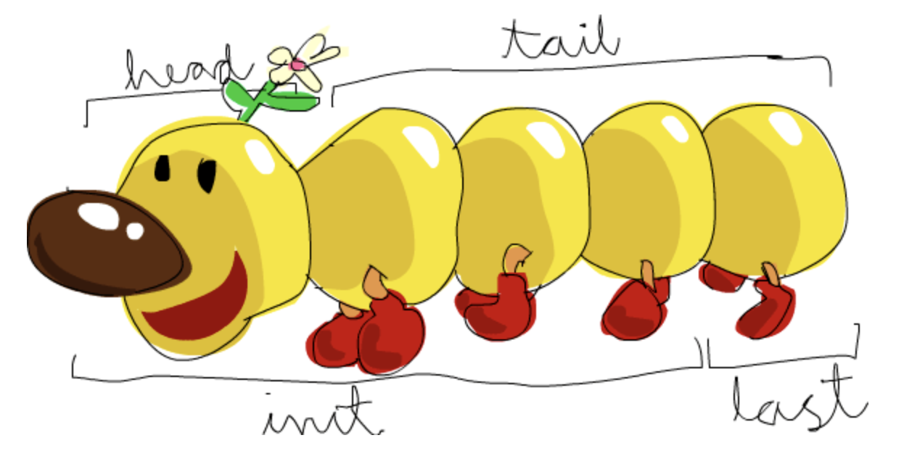

Haskell λ
Jest to statycznie typowany, głównie deklaratywny, czysto funkcyjny język programowania.
Jego najpopularniejszym kompilatorem jest GHC (Glasgow Haskell Compiler).
Podczas programowania korzystamy z wyrażeń (opisujących coś) a nie z instrukcji (mówiących co ma być zrobione).
Jedną z najważniejszych właściwości tego języka jest to, że funkcje zawsze zwracają tą samą wartość dla tych samych argumentów wejściowych. (nie ma żadnych zmiennych globalnych, statycznych ani innych rzeczy, które mogłyby wpływać na wynik).
Zmienne
Większość przydatnych rzeczy jest w dokumentacji
Char- znakisAlpha,isAlphaNum,isDigit,isLower,isUpper:: Char -> BooltoLower,toUpper:: Char -> CharputChar:: Char -> IO ()String-type String = [Char]Num,Int,Float- liczbadiv,mod()krotkafst- zwraca pierwszy elementsnd- zwraca drugi elementBool- Operatory
[]- lista (patrz Operacje na listach)
Do zdefiniowania zmiennej możemy użyć słowa kluczowego let
let x = 4 in x * x
Int <-> Char konwersja pomiędzy tymi typami jest możliwa
ord ‘b’
>98
chr 98
>‘b’
Typy
Poza wbudowanymi typami zmiennych możemy definiować własne
Synonymous types - używają już istniejących typów używamy tu słowa kluczowego type
type Name = String
type Position = String
type Age = Int
type Course = Int
type Point = (Float, Float)
type Path = [Point]
Algebraic types - typy algebraiczne są typami złożonymi zdefiniowanymi przez użytkownika. Używamy tu słowa kluczowego data
data Person = Student Age Name Course |
Professor Name Position |
Director Name
namePerson :: Person -> Name
namePerson (Student e n c) = n
namePerson (Professor n c) = n
namePerson (Director n) = n
stud1 = Student 21 "Marian" 12
Tutaj słowa Student, Professor, Director służą do określenia typu danej struktury. (data constructor symbols)
Wykorzystując same symbole konstruktorów możemy tworzyć enumy
data Day = Mon | Tue | Wed | Thu | Fri | Sat | Sun
Functional types - budują i opisują funkcje
type MyType = (Int -> Int)
fib :: MyType
Przykłady:
notto wartość typuBool -> Bool(2 +)ma typInt -> Intmapdaje(a -> b) -> [a] -> [b](przyjmuje funkcję robiązą z a b oraz tablicę a z potem zwraca tablicę b)
Operator -> zwija się z prawej strony
Tzn a -> b -> c jest równoznaczne z a -> (b -> c)
a nie (a -> b) -> c
Należy jednocześnie pamiętać, że funkcje zwijają się od prawej
f a b to ekwiwalent (f a) b a nie f (a b)
Czyli
$ not not false da nam error
Operacje
Funkcje są wywoływane poprzez podanie ich nazwy oraz argumentów
sort [42,13,22]
> [13,22,42]:: (Num a, Ord a) => [a]
Listy
Tworzenie i dodawanie
Aby dodać element do listy używamy :
'a' : []
> "a":: [Char]
Tutaj do pustej listy dodaliśmy literę a dzięki czemu dostaliśmy stringa.
Do tworzenia list możemy też używać automatycznego generowania
Przykłady:
[2..10]is[2,3,4,5,6,7,8,9,10][1..]is[1,2,3,4,...[1,3..10]is[1,3,5,7,9][’a’..’e’]is“abcde”
Lub mechanizmu List comprehension
[wyrażenie przyjmujące zmienne | generator, filtry, generator, filtry, ...]
Na przykład
[ x*x | x<-[1..5], odd x ]
> [1, 9, 25]
repeat nieskończone listy
Prelude> repeat 3
[3,3,3,3,3...]
Operacje
Pobieranie - poniżej

Inne - operator ++
-- Łączenie list
Prelude> [3,4]++[5]
[3,4,5]
-- Indeksowane elementy
Prelude> [45,43,12,54] !! 2
12
-- branie x elementów z listy
Prelude> take 3 (repeat 1)
[1,1,1]
-- usuwanie elementu z listy
Prelude>
Funkcje dla list
Funkcja zip łączy dwie listy w listę krotek
zip [1,2] ["a","b"]
> [ (1,"a"), (2,"b")]
> length [1,2,3]
3
filter (a -> Bool) -> [a] -> [a] - przefiltrowuje wybraną listę, otrzymujemy tylko elementy dla których nasza funkcja zwraca True
> filter even [1,2,4,5,32]
[2,4,32]
map :: (a -> b) -> [a] -> [b] - aplikuje wybraną funkcję na wszystkie elementy wybranej listy i zwraca listę wyników
> map square [9,3]
[81,9]
> map (<3) [1,2,3]
[True,True,False]
foldr :: (a -> b -> b) -> b -> [a] -> b - funkcja, która pozwala łączyć wartości w tablicy. Podajemy jej argumenty:
- funkcja
- pierwszy element typu docelowego
- lista
suma = foldr (+) 0
iloczyn = foldr (*) 1
Funkcje
FUnkcje są podstawotą częścią języka. Mogą być przekazywane jako argumenty, lub modyfikowane i częściowo aplikowane (partial application)
partial applications:
(+) :: Int -> Int -> Int
$ (2 +) 5
7
add_2 :: (Int -> Int)
add_2 = (2 +)
$ add_2 5
7
Definiowanie
Funkcja składa się z opcjonalnego opisu typów
nazwaFun :: Typ -> Typ -> Typ...
Oraz samej definicji, tutaj mamy 2 warianty:
addRange :: Int -> Int -> Int
addRange x y
| x == y = x
| x < y = x + addRange (x + 1) y
| otherwise = y + addRange (y + 1) x
oraz
numCbetw2 :: Char -> Char -> Int
numCbetw2 c1 c2 =
let x = ord c2 - ord c1
in if abs x == 0 then abs 0 else abs x - 1
TODO
Argumenty przekazywane do funkcji mogą mieć formę listy (łączonej strzałkami ->) lub krotek (el1,el2,...).
Łączenie funkcji
Wykorzystując kropkę . możemy łączyć funkcje w ciągi
(sum . map square . filter even) [1 .. 10]
Powyższy kod zwróci nam sumę kwadratów liczb parzystych dla liczb z zakresu 1-10.
Moduły
Moduły są odpowiednikami paczek/bibliotek dla innych języków.
Aby go włączyć należy go zaimportować
import MojModul
-- jest to plik MojModul
Przy tworzeniu nowego modułu od razu zaznaczamy jakie inne moduły improstujemy
module ModuleNameX where
import ModuleNameY
Przy plikach w folderach używamy kropek. Np jeśli w folderze A/B/C mamy plik EjemImport.hs to importujemy go tak:
import A.B.C.EjemImport
Eksportowanie - przy definiowaniu modułu możemy zaznaczyć co chcemy z niego eksportować.
-- Tutaj widać że eksportujemy tylko 2 funkcje
module Geometry2D (areaSquare, perimeterSquare) where
areaRectangle :: Float -> Float -> Float
areaRectangle base height = base * height
perimeterRectangle :: Float -> Float -> Float
perimeterRectangle base height = 2 * (base + height)
areaSquare :: Float -> Float
areaSquare side = areaRectangle side side
perimeterSquare :: Float -> Float
perimeterSquare side = perimeterRectangle side side
W wypadku, gdy występuje kolizja nazw możemy użyć słowa kluczowego qualified
module NormalizeAll where
import qualified NormalizeSpaces
import qualified NormalizeCase as NC
normalizeAll :: String -> String
normalizeAll =NormalizeSpaces.normalize . NC.normalize